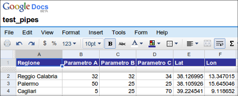
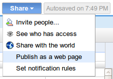
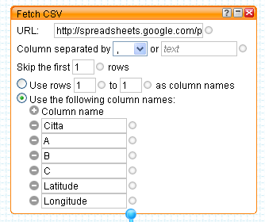
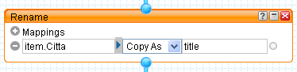
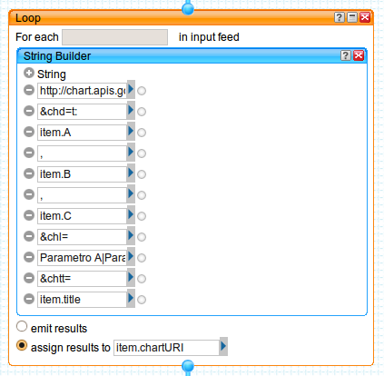
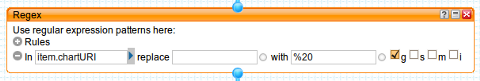
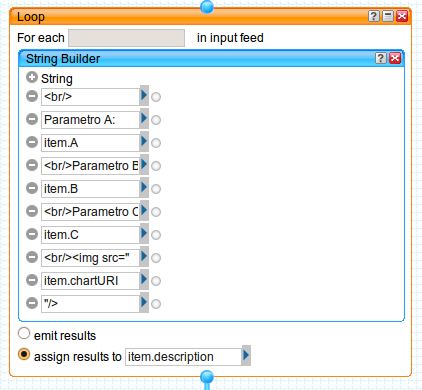
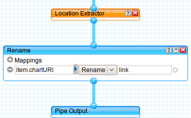
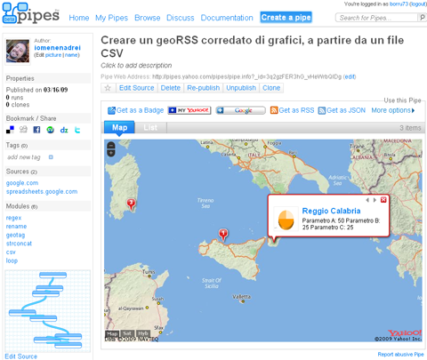
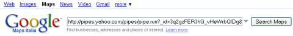

<!DOCTYPE html PUBLIC "-//W3C//DTD XHTML 1.0 Transitional//EN" "http://www.w3.org/TR/xhtml1/DTD/xhtml1-transitional.dtd">
<html xmlns="http://www.w3.org/1999/xhtml" lang="it-IT" prefix="og: http://ogp.me/ns#">
<!--<html xmlns="http://www.w3.org/1999/xhtml">-->
<head profile="http://gmpg.org/xfn/11">
<link rel="shortcut icon" href="favicon.ico" />
<meta name="verify-v1" content="G8PvtYGKaj0EOpSN6hlfwMIdWL3crWB/vw0tfJTIlp0=" />
<meta http-equiv="Content-Type" content="text/html; charset=UTF-8" />
<title>TANTO  &raquo; Archivio   &raquo; Creare un geoRSS corredato di grafici, a partire da un file CSV</title>
<meta name="generator" content="WordPress 3.5.1" /> <!-- leave this for stats -->
<meta name="ICBM" content="38.126632017365075, 13.356585502624512"/>
<meta name="DC.title" content="TANTO, le cose che ci piacciono ..."/>
<meta name="geo.position" content="38.126632017365075;13.356585502624512"/>
<META name="geo.country" content="IT"/>
<META name="geo.region" content="IT-PA"/>
<META name="geo.placename" content="Palermo"/>
<meta name="google-site-verification" content="0FAjYu2krsbtNrBdv24CFdHx01ZkXfGtfFbxHoRfkvY" />
<meta http-equiv="content-language" content="it">
<link rel="stylesheet" href="wp-content/themes/blacknwhite/blacknwhite/style.css" type="text/css" media="screen" />
<link rel="alternate" type="application/rss+xml" title="TANTO RSS Feed" href="http://feeds.feedburner.com/Tanto/" />
<link rel="alternate" type="application/rss+xml" title="TANTO Comments RSS Feed" href="comments/feed/index.html" />
<link rel="pingback" href="xmlrpc.php" />
<!--<script src="http://blog.spaziogis.it/wp-content/themes/blacknwhite/blacknwhite/js/js_liveclock.js" type="text/javascript"></script>-->

<!-- readability-->
<meta name="readability-verification" content="QMQMZwwZ29pZwJhVmsmLKZ89bGCXFWAvpmffMdcR"/>
<!-- readability-->


            <script type="text/javascript">//<![CDATA[
            // Google Analytics for WordPress by Yoast v4.3.3 | http://yoast.com/wordpress/google-analytics/
            var _gaq = _gaq || [];
            _gaq.push(['_setAccount', 'UA-90058-3']);
				            _gaq.push(['_trackPageview']);
            (function () {
                var ga = document.createElement('script');
                ga.type = 'text/javascript';
                ga.async = true;
                ga.src = ('https:' == document.location.protocol ? 'https://ssl' : 'http://www') + '.google-analytics.com/ga.js';

                var s = document.getElementsByTagName('script')[0];
                s.parentNode.insertBefore(ga, s);
            })();
            //]]></script>
			<link rel="alternate" type="application/rss+xml" title="TANTO &raquo; Creare un geoRSS corredato di grafici, a partire da un file CSV Feed dei commenti" href="2009/03/16/creare-un-georss-corredato-di-grafici-a-partire-da-un-file-csv/feed/index.html" />
<link rel="stylesheet" type="text/css" href="wp-content/plugins/slidedeck-lite-for-wordpress/skins/default/skin.css%3Fv=1.1.css" media="screen" /><link rel='stylesheet' id='mlnks-css'  href='http://blog.spaziogis.it/wp-content/plugins/wordpress-support/10667fc7c28a0e20994eb4411cb8e899.css?ver=1478521123' type='text/css' media='all' />
<link rel='stylesheet' id='wpts_ui_css-css'  href='wp-content/plugins/wordpress-post-tabs/css/styles/default/style.css%3Fver=1.4.css' type='text/css' media='all' />
<link rel='stylesheet' id='author-page-views-css'  href='index.html%3Fviewing-page=725&amp;ver=3.5.1.css' type='text/css' media='all' />
<link rel='stylesheet' id='cptchStylesheet-css'  href='wp-content/plugins/captcha/css/style.css%3Fver=3.5.1.css' type='text/css' media='all' />
<link rel='stylesheet' id='googlefonts-css'  href='http://fonts.googleapis.com/css?family=Source+Sans+Pro:400,400italic,600,600italic,900,900italic&subset=latin' type='text/css' media='all' />
<link rel='stylesheet' id='sedlex_styles-css'  href='wp-content/plugins/update-message/core/load-styles.php%3Fc=0&amp;load=8a94f7f717b19def9daeae42017dd2a7&amp;ver=20161107.css' type='text/css' media='all' />
<link rel='stylesheet' id='socialize-css'  href='wp-content/plugins/socialize/frontend/css/socialize.css%3Fver=3.5.1.css' type='text/css' media='all' />
<script type='text/javascript' src='wp-includes/js/jquery/jquery.js%3Fver=1.8.3'></script>
<script type='text/javascript' src='wp-content/plugins/fd-footnotes/fdfootnotes.js%3Fver=1.3'></script>
<script type='text/javascript' src='wp-content/plugins/slidedeck-lite-for-wordpress/lib/jquery-mousewheel/jquery.mousewheel.min.js%3Fver=1.4.8'></script>
<script type='text/javascript' src='wp-content/plugins/slidedeck-lite-for-wordpress/lib/slidedeck.jquery.lite.pack.js%3Fver=1.4.8'></script>
<link rel="EditURI" type="application/rsd+xml" title="RSD" href="xmlrpc.php%3Frsd" />
<link rel="wlwmanifest" type="application/wlwmanifest+xml" href="wp-includes/wlwmanifest.xml" /> 
<link rel='prev' title='La nuova Carta Tecnica della Regione Puglia' href='index.html_p=714.html' />
<link rel='next' title='Google street view cresce in Italia' href='index.html_p=762.html' />
<link rel='canonical' href='index.html_p=725.html' />
<link rel='shortlink' href='index.html_p=725.html' />
<!-- Location provided by GeoPress v2.4.3 (http://georss.org/geopress) --><meta name="plugin" content="geopress">
<script type="text/javascript" src="http://api.maps.yahoo.com/ajaxymap?v=3.4&amp;appid=GkJEh7bV34F74Yv964bW5EQntmLQOPiPtwYlumh_.8_kdpCG9NimzBZhqn04NA--"></script>
<script type="text/javascript" src="http://maps.google.com/maps?file=api&amp;v=2&amp;key=ABQIAAAA2XfdS2WfWDTE_U5DK5pK1RQjFwtZC1p89Y-7MAyq65TPpKffpRSD9cYrtN_hz3BqVH7uRWidtg7BUA" ></script>
<script type="text/javascript" src="wp-content/plugins/geopress/mapstraction.js"></script>
<script type="text/javascript" src="wp-content/plugins/geopress/geopress.js"></script><link rel="stylesheet" type="text/css" href="wp-content/plugins/j-shortcodes/css/jay.css" />
<script type="text/javascript" src="wp-content/plugins/j-shortcodes/js/jay.js"></script><link rel="stylesheet" type="text/css" href="wp-content/plugins/j-shortcodes/galleryview/css/jquery.galleryview-3.0.css" />
<script type="text/javascript" src="wp-content/plugins/j-shortcodes/galleryview/js/jquery.easing.1.3.js"></script>
<script type="text/javascript" src="wp-content/plugins/j-shortcodes/galleryview/js/jquery.timers-1.2.js"></script>
<script type="text/javascript" src="wp-content/plugins/j-shortcodes/galleryview/js/jquery.galleryview-3.0.min.js"></script><link rel="stylesheet" type="text/css" href="wp-content/plugins/j-shortcodes/css/jquery/smoothness/jquery-ui-1.8.9.custom.css" /><link rel="alternate" type="application/rss+xml" title="TANTO GeoRSS-Feed" href="wp-content/plugins/leaflet-maps-marker/leaflet-georss.php%3Flayer=all" />
<!-- Meta tags added by Robots Meta: http://yoast.com/wordpress/meta-robots-wordpress-plugin/ -->
<meta name="robots" content="noodp,noydir,noarchive" />
<meta property="og:title" content="Creare un geoRSS corredato di grafici, a partire da un file CSV"/>
<meta property="og:type" content="article"/>
<meta property="og:url" content="http://blog.spaziogis.it/2009/03/16/creare-un-georss-corredato-di-grafici-a-partire-da-un-file-csv/"/>
<meta property="og:site_name" content="TANTO"/>
<link rel="stylesheet" href="wp-content/plugins/wp-note/style.css" type="text/css" media="screen" />	
	<span class="Z3988" title="ctx_ver=Z39.88-2004&amp;rft_val_fmt=info%3Aofi%2Ffmt%3Akev%3Amtx%3Adc&amp;rfr_id=info%3Asid%2Focoins.info%3Agenerator&amp;rft.title=Creare+un+geoRSS+corredato+di+grafici%2C+a+partire+da+un+file+CSV&amp;rft.aulast=Borruso&amp;rft.aufirst=Andrea&amp;rft.subject=Didattica&amp;rft.subject=osgeo&amp;rft.source=TANTO&amp;rft.date=2009-03-16&amp;rft.type=blogPost&amp;rft.format=text&amp;rft.identifier=http://blog.spaziogis.it/2009/03/16/creare-un-georss-corredato-di-grafici-a-partire-da-un-file-csv/&amp;rft.language=English"></span>
<meta property="og:type" content="article" />
<meta property="og:title" content="Creare un geoRSS corredato di grafici, a partire da un file CSV" />
<meta property="og:url" content="http://blog.spaziogis.it/2009/03/16/creare-un-georss-corredato-di-grafici-a-partire-da-un-file-csv/" />
<meta property="og:description" content="In questo post vi mostrerò come creare una sorgente geoRSS a partire da un file CSV che ho creato per l&#8217;occasione. Questo contiene dei dati fittizi su tre città italiane, che voglio pubblicare all&#8217;interno della sorgente geoRSS, curandone struttura e formattazione, ed inserendo anche un grafico di sintesi dei parametri presenti in ogni record. Realizzerò [...]" />
	<style type="text/css">.recentcomments a{display:inline !important;padding:0 !important;margin:0 !important;}</style>
<!-- Vipers Video Quicktags v6.4.5 | http://www.viper007bond.com/wordpress-plugins/vipers-video-quicktags/ -->
<style type="text/css">
.vvqbox { display: block; max-width: 100%; visibility: visible !important; margin: 10px auto; } .vvqbox img { max-width: 100%; height: 100%; } .vvqbox object { max-width: 100%; } 
</style>
<script type="text/javascript">
// <![CDATA[
	var vvqflashvars = {};
	var vvqparams = { wmode: "opaque", allowfullscreen: "true", allowscriptaccess: "always" };
	var vvqattributes = {};
	var vvqexpressinstall = "http://blog.spaziogis.it/wp-content/plugins/vipers-video-quicktags/resources/expressinstall.swf";
// ]]>
</script>
<style type="text/css" id="custom-background-css">
body.custom-background { background-color: #ffffff; }
</style>
	<link type="text/css" rel="stylesheet" href="wp-content/plugins/syntaxhighlighter2/files/shCore.css"></link>
	<link type="text/css" rel="stylesheet" href="wp-content/plugins/syntaxhighlighter2/files/shThemeDefault.css"></link>
<!-- aggiunto per compatibilit con wibyia -->
<!-- <script type="text/javascript" src="http://code.jquery.com/jquery-1.4.2.min.js"></script>-->
<!-- aggiunto per compatibilit con wibyia -->

<link rel="canonical" href="index.html_p=725.html" /></head>
<body>

<!-- facebook bottone share -->	
<div id="fb-root"></div>
<script>(function(d, s, id) {
  var js, fjs = d.getElementsByTagName(s)[0];
  if (d.getElementById(id)) return;
  js = d.createElement(s); js.id = id;
  js.src = "//connect.facebook.net/it_IT/sdk.js#xfbml=1&version=v2.4&appId=142917312412240";
  fjs.parentNode.insertBefore(js, fjs);
}(document, 'script', 'facebook-jssdk'));</script>
<!-- facebook bottone share -->	

<div id="wrap">
<div id="top">
<div id="logo">
<a href="index.html">
<!-- http://blog.spaziogis.it/wp-content/themes/blacknwhite/blacknwhite/images/images/TANTO_logo_city.gif -->
<!-- scherzo d'aprile http://blog.spaziogis.it/wp-content/uploads/2015/03/1apr2015.png -->
</a>
<!--<h1 class="title"><a href="http://blog.spaziogis.it">TANTO</a></h1>
<p class="desc">le cose che ci piacciono &#8230;</p>-->
</div>
<div id="canali">
<a href="http://feeds.feedburner.com/Tanto/" target="_blank" title="Iscriviti alla nostro feed RSS" alt="Iscriviti alla nostro feed RSS"></a>
<a href="twitter/index.html" title="TANTO su twitter" alt="TANTO su twitter"></a>
<a href="http://www.facebook.com/tantobook" target="_blank" title="TANTO su facebook" alt="TANTO su facebook"></a>
<a href="http://www.google.com/producer/editions/CAowwvrMAg/tanto" target="_blank" title="TANTO su Google currents" alt="TANTO su Google currents"></a>
<a href="http://flip.it/UyBY3" target="_blank" title="TANTO su Flipboard" alt="TANTO su Flipboard"></a>
<a href="http://planetgis.it/" target="_blank" title="Planet GIS Italia" alt="Planet GIS Italia"></a>
<a href="se-vuoi-essere-sempre-aggiornato/index.html" target="_blank" title="Iscriviti alla nostra Newsletter" alt="Iscriviti alla nostra Newsletter"></a>
</div>
<!--
<div id="festa">
<a href="#">
</a>
</div>-->
<!--<div id="clock"><script type="text/javascript">showdate();</script></div>-->
</div>
<div id="nav">
<div class="menu-navigazione-container"><ul id="menu-navigazione" class="nav"><li id="menu-item-2479" class="menu-item menu-item-type-custom menu-item-object-custom menu-item-home menu-item-2479"><a href="index.html" >HOME</a></li>
<li id="menu-item-2481" class="menu-item menu-item-type-post_type menu-item-object-page menu-item-2481"><a href="questo-sito/index.html" >Questo sito</a></li>
<li id="menu-item-2480" class="menu-item menu-item-type-post_type menu-item-object-page menu-item-2480"><a href="se-vuoi-essere-sempre-aggiornato/index.html" >Se vuoi essere sempre aggiornato</a></li>
<li id="menu-item-5338" class="menu-item menu-item-type-post_type menu-item-object-page menu-item-5338"><a href="twitter/index.html" >twitter</a></li>
</ul></div><form id="searchform" method="get" action="index.html" ><input type="text" value="search" onfocus="if (this.value == 'search') {this.value = '';}" onblur="if (this.value == '') {this.value = 'Search';}" size="18" maxlength="50" name="s" id="s" />
</form></div>
<div id="main">

<div id="content"> 

    <div class="metainfo">                                        
    <div align="center">                                        
      <!-- codice per stampare icone categorie -->
      <br/><br/><!-- codice per stampare icone categorie -->			


<!-- da twitter-->	
<script src="http://platform.twitter.com/widgets.js" type="text/javascript"></script>
<div>
 <a href="http://twitter.com/share" class="twitter-share-button"
 data-url="http://blog.spaziogis.it/2009/03/16/creare-un-georss-corredato-di-grafici-a-partire-da-un-file-csv/"
 data-via="twanto"
 data-count="vertical">Tweet</a>
</div>
<!-- da twitter-->	


<br/>
<!--<div style="width:52px !important;" class="fb-share-button" data-href="http://blog.spaziogis.it/2009/03/16/creare-un-georss-corredato-di-grafici-a-partire-da-un-file-csv/" data-layout="box_count"></div>-->
<br/>
<br/>


<!-- google +1 button -->
<script type="text/javascript" src="https://apis.google.com/js/plusone.js"></script>
<g:plusone size="tall"></g>
<!-- google +1 button -->


</div>
</div>        
<div class="entry">        


  <div class="post" id="post-725">
    <div class="titolopost"><h2><a href="index.html_p=725.html" rel="bookmark" title="Permanent Link: Creare un geoRSS corredato di grafici, a partire da un file CSV">Creare un geoRSS corredato di grafici, a partire da un file CSV</a></h2></div>
    <small>16 marzo, 2009 | di <strong><a href="author/andreaborruso-2-2/index.html" title="Articoli scritti da: Andrea Borruso" rel="author">Andrea Borruso</a></strong>  in &raquo; 

    <a href="categoria/didattica/index.html" title="Visualizza tutti gli articoli in Didattica" >Didattica</a>

    


  </small>                    

  <!-- per rimuovere i tasti condividi di jetpack -->
      <!-- per rimuovere i tasti condividi di jetpack -->

  	
	<span class="Z3988" title="ctx_ver=Z39.88-2004&amp;rft_val_fmt=info%3Aofi%2Ffmt%3Akev%3Amtx%3Adc&amp;rfr_id=info%3Asid%2Focoins.info%3Agenerator&amp;rft.title=Creare+un+geoRSS+corredato+di+grafici%2C+a+partire+da+un+file+CSV&amp;rft.aulast=Borruso&amp;rft.aufirst=Andrea&amp;rft.subject=Didattica&amp;rft.subject=osgeo&amp;rft.source=TANTO&amp;rft.date=2009-03-16&amp;rft.type=blogPost&amp;rft.format=text&amp;rft.identifier=http://blog.spaziogis.it/2009/03/16/creare-un-georss-corredato-di-grafici-a-partire-da-un-file-csv/&amp;rft.language=English"></span>
	<p>In questo post vi mostrerò come creare una sorgente <strong><a title="geoRSS su Wikipedia" href="http://en.wikipedia.org/wiki/GeoRSS" onclick="javascript:_gaq.push(['_trackEvent','outbound-article','http://en.wikipedia.org']);" target="_blank">geoRSS</a></strong> a partire da un file <strong>CSV </strong>che ho creato per l&#8217;occasione. Questo contiene dei dati fittizi su tre città italiane, che voglio pubblicare all&#8217;interno della sorgente geoRSS, curandone struttura e formattazione, ed inserendo anche un grafico di sintesi dei parametri presenti in ogni record.</p>
	<p>Realizzerò il tutto creando un piccolo <em><strong>mashup</strong></em> sfruttando i seguenti servizi:</p>
	<ul>
	<li><a title="Google Docs" href="http://docs.google.com/" onclick="javascript:_gaq.push(['_trackEvent','outbound-article','http://docs.google.com']);" target="_blank">Google Docs</a>, per l&#8217;archiviazione dei dati grezzi e per la creazione del CSV a partire da questi</li>
	<li><a title="Yahoo pipes" href="http://pipes.yahoo.com" onclick="javascript:_gaq.push(['_trackEvent','outbound-article','http://pipes.yahoo.com']);" target="_blank">Yahoo! Pipes</a>, per l&#8217;elaborazione del file CSV e la sua trasformazione in geoRSS</li>
	<li>le api di <a title="Google Charts Api" href="http://code.google.com/intl/it/apis/chart/" onclick="javascript:_gaq.push(['_trackEvent','outbound-article','http://code.google.com']);" target="_blank">Google Charts</a>, per inserire nella sorgente geoRSS dei grafici di sintesi sui dati contenuti nel file CSV</li>
	<li>Google maps per visualizzare la  sorgente geoRSS in una mappa</li>
	</ul>
	<p>Un <em>mashup</em> è un&#8217;applicazione che, a partire da dati ed informazioni provenienti da due o più fonti/servizi/applicazioni, crea nuove applicazioni/servizi.</p>
	<h2>Google Docs</h2>
	<p>Ho creato in <strong>Google Docs</strong> un nuovo foglio elettronico ed ho inserito dei dati fittizi su tre città italiane. Ho anche aggiunto una colonna per il valore di latitudine, ed una per quello di longitudine (entrambi espressi i gradi decimali).</p>
	<p style="text-align: center;"></p>
	<p>Per fare dialogare questo foglio elettronico con gli altri servizi citati sopra, dovrò renderlo pubblico; lo farò utilizzando il tasto <em>Share </em>e selezionando l&#8217;opzione &#8220;<em>Publish as a web page</em>&#8221; (così come nella figura sottostante).</p>
	<p style="text-align: center;"></p>
	<p style="text-align: left;">Si aprirà una finestra di pop-up e dovrò cliccare su &#8220;<em>Publish now</em>&#8220;. Fatto questo, cliccherò sul link (presente in basso) &#8220;<em>More publishing options</em>&#8220;; si aprirà un&#8217;altra finestra di pop-up in cui sceglierò CSV come formato di pubblicazione e cliccherò sul tasto &#8220;Generate URL&#8221;. In ultimo copierò l&#8217;URL appena generato e lo incollerò da qualche parte (in un editor di testo).</p>
	<h2>Yahoo! Pipes e Google Charts</h2>
	<p>Yahoo! Pipes è il mio editor/cratore di <em>mashup</em> preferito. &#8220;Si presenta&#8221; ufficialmente così:</p>
	<blockquote><p>Pipes is a powerful composition tool to <strong>aggregate</strong>, <strong>manipulate</strong>, and <strong>mashup</strong> <strong>content</strong> from around the web.</p></blockquote>
	<p>Con Pipes aggrego ad esempio i feed RSS che pubblico in <a title="Blog GIS Italia" href="http://feeds2.feedburner.com/BlogGisItaliaV2" onclick="javascript:_gaq.push(['_trackEvent','outbound-article','http://feeds2.feedburner.com']);" target="_blank">Blog GIS Italia</a>, ma qui lo utilizzerò in modo diverso.</p>
	<p>La prima cosa da fare in Pipes è scegliere la fonte dei nostri dati (possono essere anche più d&#8217;una), e in questo caso sceglierò il file CSV di cui sopra; ne andrò a recuperare l&#8217;URL e lo incollerò dentro il modulo di Pipes &#8220;Fetch CSV&#8221;.</p>
	<p style="text-align: center;"></p>
	<p>Posso personalizzare diverse parametri. In questo caso ho escluso dalla lettura dei dati la prima riga (contiene i nomi delle colonne), ed ho impostato a mano i nomi delle colonne della mia tabella.</p>
	<p>A questo modulo, ne collego un altro che trovo tra gli operatori di Pipes: &#8220;Rename&#8221;.</p>
	<p style="text-align: center;"></p>
	<p>In questo modo rinominerò il campo &#8220;Citta&#8221; in &#8220;title&#8221;, in modo da avere a disposizione uno dei campi necessari per la creazione di una sorgente RSS.</p>
	<p>Eseguirò successivamente il primo di due <strong><em>loop </em></strong>presenti in questo Pipe. Per ogni record della tabella andrò a &#8220;costruire&#8221; l&#8217;URL che mi consentirà di creare un grafico tramite le API di Google Charts. La struttura di base dell&#8217;URL per la generazione di un grafico tramite queste API è come quella sottostante:</p>
	<pre>http://chart.apis.google.com/chart?
chs=250x100
&amp;chd=t:60,40
&amp;cht=p3
&amp;chl=Hello|World</pre>
	<p>Dove:</p>
	<ul>
	<li><span style="color: #999999;">http://chart.apis.google.com/chart?</span> è l&#8217;URL di base delle API.</li>
	<li><span style="color: #808080;">&amp;</span> è il separatore dei parametri</li>
	<li><span style="color: #808080;">chs=250&#215;100</span> è la larghezza dei grafici in pixel.</li>
	<li><span style="color: #808080;">chd=t:60,40</span> sono i dati che voglio rappresentare.</li>
	<li><span style="color: #808080;">cht=p3</span> è il tipo di grafico.</li>
	<li><span style="color: #808080;">chl=Hello|World</span> sono le etichette del grafico.</li>
	</ul>
	<p>Dovrò adattare questo schema ai miei dati, per struttura, valori e formattazione.</p>
	<p>Inserirò allora nel modulo &#8220;<em>Loop</em>&#8221; di Pipes un costruttore di stringhe &#8211; il modulo &#8220;<em>String Builder</em>&#8221; &#8211; con cui genererò un URL utile per la stampa a video di un grafico a torta per ogni record della mia tabella.</p>
	<p style="text-align: center;"></p>
	<p>Assegnerò i valori di output di questo loop alla variabile  &#8220;item.chartURI&#8221;. Per il primo record verrà generato ad esempio questo URL:</p>
	<pre><span><span>\"http://chart.apis.google.com/chart?cht=p3&amp;chd=t:32,32,34&amp;chl=Parametro
A|Parametro B|Parametro C&amp;chs=450x200&amp;chtt=Reggio Calabria\"</span></span></pre>
	<p>Utilizzerò il modulo &#8220;Regex&#8221; per fare sì che gli URL generati abbiano una corretta sintassi. Rimuoverò quindi gli spazi e li sostituirò con la stringa &#8220;%20&#8243;</p>
	<p style="text-align: center;"></p>
	<p>Utilizzerò adesso il secondo modulo di &#8220;Loop&#8221;, per generare il contenuto del secondo elemento necessario in una sorgente RSS: il campo &#8220;<em>descritpion</em>&#8220;. Lo riempirò con delle stringhe di testo con i valori delle colonne che rappresenterò tramite grafico, e con il grafico stesso. Questo per ogni record della tabella.</p>
	<p>Posso inserire qualsiasi stringa HTML che sia utile a formattare al meglio gli elementi del mio RSS. Il grafico verrà inserito in corrispondenza del tag &lt;img&gt;, che avrà come <em>source</em> proprio l&#8217;URL generato nel primo loop.</p>
	<p style="text-align: center;"></p>
	<p>Infine:</p>
	<ul>
	<li> userò il modulo &#8220;Location Extractor&#8221; per trasformare un normale RSS in un geoRSS</li>
	<li>mapperò il campo &#8220;link&#8221; della sorgente RSS affinché punti al grafico generato</li>
	<li>genererò l&#8217;output</li>
	</ul>
	<p style="text-align: center;"></p>
	<p>Il modulo &#8220;Location Extractor&#8221; non richiede informazioni aggiuntive, perché sfrutta due colonne presenti nel mio file CSV originario: &#8220;Latitude&#8221; e &#8220;Longitude&#8221;. In questo modo ogni elemento del mio RSS sarà geotaggato.</p>
	<p>Non mi resta che salvare il mio Pipe cliccando sul tasto &#8220;Save&#8221;, e provarlo. Per vederlo in azione cliccherò sul link &#8220;<em>Run pipe</em>&#8220;, visibile nella zona in alto al centro della finestra di editing del Pipe. Si aprirà una pagina come quella sottostante.</p>
	<p style="text-align: center;"></p>
	<p>Da questavisualizzerò gli elementi della mia sorgente RSS. Nel caso di una fonte geoRSS verrà generata automaticamente una mappa, che potrò inserire in una qualsiasi pagina html (copiando il codice che mi verrà restituito al click sul tasto &#8220;<em>Get as a Badge</em>&#8220;). Qui sotto vedete il tutto in azione.</p>
	<div align="center">
<script src="http://l.yimg.com/a/i/us/pps/mapbadge_1.3.js">{"pipe_id":"3q2gzFER3hG_vHeWrbQIDg","_btype":"map"}</script>
</div>
	<p>Questi alcuni degli altri output possibili:</p>
	<ul>
	<li><a title="pipes rss output" href="http://pipes.yahoo.com/pipes/pipe.run?_id=3q2gzFER3hG_vHeWrbQIDg&amp;_render=rss" onclick="javascript:_gaq.push(['_trackEvent','outbound-article','http://pipes.yahoo.com']);" target="_blank">RSS</a></li>
	<li><a title="pipes json output" href="http://pipes.yahoo.com/pipes/pipe.run?_id=3q2gzFER3hG_vHeWrbQIDg&amp;_render=json" onclick="javascript:_gaq.push(['_trackEvent','outbound-article','http://pipes.yahoo.com']);" target="_blank">JSON</a></li>
	<li>un output pensato per codice scritto in <a title="New Yahoo! Pipes PHP serialized output renderer" href="http://blog.pipes.yahoo.net/2008/04/02/new-yahoo-pipes-php-serialized-output-renderer/" onclick="javascript:_gaq.push(['_trackEvent','outbound-article','http://blog.pipes.yahoo.net']);" target="_blank">PHP</a></li>
	<li><a title="pipes kml output" href="http://pipes.yahoo.com/pipes/pipe.run?_id=3q2gzFER3hG_vHeWrbQIDg&amp;_render=kml" onclick="javascript:_gaq.push(['_trackEvent','outbound-article','http://pipes.yahoo.com']);" target="_blank">KML</a></li>
	<li><a title="pipes csv output" href="http://pipes.yahoo.com/pipes/pipe.run?_id=3q2gzFER3hG_vHeWrbQIDg&amp;_render=csv" onclick="javascript:_gaq.push(['_trackEvent','outbound-article','http://pipes.yahoo.com']);" target="_blank">CSV</a></li>
	</ul>
	<h2>Google Maps</h2>
	<p>Due degli output di sopra, <a title="pipes rss output" href="http://pipes.yahoo.com/pipes/pipe.run?_id=3q2gzFER3hG_vHeWrbQIDg&amp;_render=rss" onclick="javascript:_gaq.push(['_trackEvent','outbound-article','http://pipes.yahoo.com']);" target="_blank">RSS</a> e<a title="pipes kml output" href="http://pipes.yahoo.com/pipes/pipe.run?_id=3q2gzFER3hG_vHeWrbQIDg&amp;_render=kml" onclick="javascript:_gaq.push(['_trackEvent','outbound-article','http://pipes.yahoo.com']);" target="_blank"> KML</a>, possono essere visualizzati in un istante ed in modo molto efficace in <strong>Google Maps</strong>.</p>
	<p>Basterà incollare uno dei due URL di sopra (RSS o KML) dentro il box di ricerca di Google Maps, e fare click sul tasto di ricerca.</p>
	<p style="text-align: center;"></p>
	<p style="text-align: left;">Qui i due risultati in azione:</p>
	<ul>
	<li><a title="geoRSS su Google Maps" href="http://maps.google.it/maps?f=q&amp;source=s_q&amp;hl=en&amp;geocode=&amp;q=http:%2F%2Fpipes.yahoo.com%2Fpipes%2Fpipe.run%3F_id%3D3q2gzFER3hG_vHeWrbQIDg%26_render%3Drss&amp;ie=UTF8&amp;t=p&amp;z=7" onclick="javascript:_gaq.push(['_trackEvent','outbound-article','http://maps.google.it']);" target="_blank">RSS su Google Maps</a></li>
	<li><a title="Kml su Google Maps" href="http://maps.google.it/maps?f=q&amp;source=s_q&amp;hl=en&amp;geocode=&amp;q=http:%2F%2Fpipes.yahoo.com%2Fpipes%2Fpipe.run%3F_id%3D3q2gzFER3hG_vHeWrbQIDg%26_render%3Dkml&amp;ie=UTF8&amp;t=k&amp;z=7" onclick="javascript:_gaq.push(['_trackEvent','outbound-article','http://maps.google.it']);" target="_blank">KML su Google Maps</a></li>
	</ul>
	<p>E&#8217; possibile ottenere questo risultato con (quasi) qualsiasi URL di file KML o sorgenti RSS che siano geroRSS.</p>
	<h2>Considerazioni finali</h2>
	<p>Questo post è quasi la traduzione di <a title="Creating Google Charts From CSV Data Inside a Yahoo Pipe" href="http://ouseful.wordpress.com/2009/03/12/creating-google-charts-from-csv-data-inside-a-yahoo-pipe/" onclick="javascript:_gaq.push(['_trackEvent','outbound-article','http://ouseful.wordpress.com']);" target="_blank">quest&#8217;altro</a> pubblicato su uno dei Blog che mi solletica di più in questo momento: <strong>OUseful.Info</strong>. Leggerlo è stato divertente, ma lo è stato molto di più mettere in pratica quanto descritto. Quello che vorrei trasmettervi è l&#8217;importanza del &#8220;fare&#8221;: si comprendono i concetti in modo più profondo, ed escono fuori molte più idee.</p>
	<p>Quello che mi stupisce sempre è qualità, la varietà, e la &#8220;potenza&#8221; degli strumenti che abbiamo a disposizione. L&#8217;esempio descritto in questo post è semplice, e mentre lo scrivevo mi rendevo conto che con un po&#8217; di fantasia ed ingegno si potrebbero ottenere risultati sorprendenti.</p>
	<p>Per utilizzare Yahoo! Pipes è necessario avere un account Yahoo!. <a title="Creare un geoRSS corredato di grafici, a partire da un file CSV" href="http://pipes.yahoo.com/pipes/pipe.info?_id=3q2gzFER3hG_vHeWrbQIDg" onclick="javascript:_gaq.push(['_trackEvent','outbound-article','http://pipes.yahoo.com']);" target="_blank">Qui</a> il Pipe che ho realizzato, che potrete clonare ed adattare alle vostre &#8220;vere&#8221; esigenze.</p>
	<h2>Sitografia letta, consigliata e disordinata</h2>
	<ol>
	<li>“Chart Types &#8211; Google Chart API &#8211; Google Code,” <a title="Chart Types - Google Chart API - Google Code" href="http://code.google.com/intl/it/apis/chart/types.html" onclick="javascript:_gaq.push(['_trackEvent','outbound-article','http://code.google.com']);" target="_blank">http://code.google.com/intl/it/apis/chart/types.html</a>.</li>
	<li>“Creating Google Charts From CSV Data Inside a Yahoo Pipe « OUseful.Info, the blog…,” <a title="Creating Google Charts From CSV Data Inside a Yahoo Pipe « OUseful.Info, the blog…" href="http://ouseful.wordpress.com/2009/03/12/creating-google-charts-from-csv-data-inside-a-yahoo-pipe/" onclick="javascript:_gaq.push(['_trackEvent','outbound-article','http://ouseful.wordpress.com']);" target="_blank">http://ouseful.wordpress.com/2009/03/12/creating-google-charts-from-csv-data-inside-a-yahoo-pipe/</a>.</li>
	<li>“GeoRSS &#8211; Wikipedia, the free encyclopedia,” <a title="GeoRSS - Wikipedia, the free encyclopedia" href="http://en.wikipedia.org/wiki/GeoRSS" onclick="javascript:_gaq.push(['_trackEvent','outbound-article','http://en.wikipedia.org']);" target="_blank">http://en.wikipedia.org/wiki/GeoRSS</a>.</li>
	<li>“The scripting library: Combining data and information in the library,” <a title="The scripting library: Combining data and information in the library" href="http://www.slideshare.net/bonaria/the-scripting-library-combining-data-and-information-in-the-library" onclick="javascript:_gaq.push(['_trackEvent','outbound-article','http://www.slideshare.net']);" target="_blank">http://www.slideshare.net/bonaria/the-scripting-library-combining-data-and-information-in-the-library</a>.</li>
	<li>“Technical Overview: GeoRSS,” <a title="Technical Overview: GeoRSS" href="http://www.geowebguru.com/articles/108-technical-overview-georss" onclick="javascript:_gaq.push(['_trackEvent','outbound-article','http://www.geowebguru.com']);" target="_blank">http://www.geowebguru.com/articles/108-technical-overview-georss</a>.</li>
	</ol>


      <div class="tantotag"><p>Tag: <a href="tag/georss/index.html" rel="nofollow tag">georss</a> <a href="tag/google-charts/index.html" rel="nofollow tag">google charts</a> <a href="tag/google-docs/index.html" rel="nofollow tag">google-docs</a> <a href="tag/google-maps/index.html" rel="nofollow tag">google-maps</a> <a href="tag/mashup/index.html" rel="nofollow tag">mashup</a> <a href="tag/pipes/index.html" rel="nofollow tag">pipes</a> <a href="tag/webm/index.html" rel="nofollow tag">webm</a></p></div>
  <p>        
    <div class="postauthorsingle">
    <div>
        <span class="postauthorpre">Pensato e scritto da </span><span class="postauthorsign"><a href="author/andreaborruso-2-2/index.html" title="Articoli scritti da: Andrea Borruso" rel="author">Andrea Borruso</a></span>
    </div>

        Sono un geologo marino e nel 1999 ho iniziato con Antonio D'Argenio la vita da libero professionista nel mondo dei Sistemi Informativi Geografici. Nei primi anni - di tanto studio e di poche fatture - è stato fatale l’incontro con MapServer: il web-mapping e le applicazioni web sono diventati due pezzi importanti della mia professione.
Negli ultimi anni mi sono occupato anche di formazione e di recente sono entrato nello strano mondo del telerilevamento di prossimità.
Mi piace molto leggere di GIS, informazione geografica, e neogeography, e parlarne con gli amici che incontro spesso al bar dietro al router.        <div class="postauthorsingletwitter">
        <!-- <strong>twitter</strong>: --> <a href="http://twitter.com/aborruso"></a>
    </div>

    <div class="authosn">
        <a href="mailto:aborruso@gmail.com" target="_blank"></a><a href="http://www.facebook.com/andreaborruso" target="_blank"></a><a href="http://it.linkedin.com/in/andreaborruso/it" target="_blank"></a><a href="http://twitter.com/aborruso" target="_blank"></a><a href="https://plus.google.com/u/0/+AndreaBorruso?rel=author" target="_blank"></a>    </div>        


</div></p>


<div class='yarpp-related'>
<p>Post correlati:</p><ol>
<li><a href='tag/webmapping/page/2/2008/04/22/pubblicare-facilmente-una-carta-raster-sul-web/index.html' rel='bookmark' title='Pubblicare facilmente una carta raster sul web'>Pubblicare facilmente una carta raster sul web</a></li>
<li><a href='index.html_p=415.html' rel='bookmark' title='Un&#8217;eccellente articolo sulla cartografia online e sulle soluzioni disponibili per produrla (oltre Google Maps)'>Un&#8217;eccellente articolo sulla cartografia online e sulle soluzioni disponibili per produrla (oltre Google Maps)</a></li>
<li><a href='index.html_p=243.html' rel='bookmark' title='Da Google Earth a Google Maps in pochi secondi'>Da Google Earth a Google Maps in pochi secondi</a></li>
<li><a href='index.html_p=210.html' rel='bookmark' title='Bikely: per condividere i vostri percorsi in bicicletta'>Bikely: per condividere i vostri percorsi in bicicletta</a></li>
<li><a href='index.html_p=145.html' rel='bookmark' title='Un articolo sullo sviluppo di applicazioni basate su Google Maps'>Un articolo sullo sviluppo di applicazioni basate su Google Maps</a></li>
</ol>
</div>

<!-- per inserire i tasti condividi di jetpack -->
 
<!-- per inserire i tasti condividi di jetpack -->


<table width="100%" border="0">                                        
  <tr>                                        
    <td width="490" height="25">                                        
      <iframe src="http://www.facebook.com/plugins/like.php?href=http%3A%2F%2Fblog.spaziogis.it%2F2009%2F03%2F16%2Fcreare-un-georss-corredato-di-grafici-a-partire-da-un-file-csv%2F&amp;layout=standard&amp;show_faces=false&amp;width=400&amp;action=like&amp;colorscheme=light" scrolling="no" frameborder="0" allowTransparency="true" style="border:none; overflow:hidden; width:400px; height:25px"></iframe>
    </td>                                        

  </tr>                                        
</table>                                        


  <div class="avviso">                                                    
    Attenzione! Questo &egrave; un articolo di almeno un anno fa!<br />                                                    
    I contenuti potrebbero non essere pi&ugrave; adeguati ai tempi!                                                    
  </div>		                                                    

  	

  


</div>                                        
<!--feedburner-->                                        
<script src="http://feeds.feedburner.com/~s/Tanto?i=http://blog.spaziogis.it/2009/03/16/creare-un-georss-corredato-di-grafici-a-partire-da-un-file-csv/" type="text/javascript" charset="utf-8"></script>
<!--feedburner-->                                        
</div>                                        


<div class="entry">                                        
  
<!-- You can start editing here. -->

<div class="boxcomments">


	

	<h2 id="comments">8 Responses to &#8220;Creare un geoRSS corredato di grafici, a partire da un file CSV&#8221;</h2>
	<ol class="commentlist">
			
<li class="odd" id="comment-3977">
<div class="avatar">
</div>
		<p style="margin-bottom:5px;">By <strong><a href="http://www.indiritto.it/" onclick="javascript:_gaq.push(['_trackEvent','outbound-commentauthor','http://www.indiritto.it']);"  rel='external nofollow' class='url'>Gerlando Gibilaro</a></strong> on <a href="index.html_p=725.html#comment-3977" title="">mar 17, 2009</a> </p>
				<p>Può, sicuramente, risultare autoreferenziale, ma è sempre un piacere leggere articoli chiari.<br />
Tralasciando le considerazioni sulle potenzialità di tali strumenti utilizzati in maniera combinata tra di loro, mi piace segnalare, per chi fosse interessato, alcuni tutorial su Yahoo! Pipes:<br />
<a href="http://www.squidoo.com/yahoo-pipes-guide" onclick="javascript:_gaq.push(['_trackEvent','outbound-comment','http://www.squidoo.com']);" rel="nofollow">A Guide to Yahoo Pipes</a>;<br />
<a href="http://www.metafluence.com/a-brief-reintroduction-to-yahoo-pipes-part-1-of-5/" onclick="javascript:_gaq.push(['_trackEvent','outbound-comment','http://www.metafluence.com']);" rel="nofollow">A brief reintroduction to Yahoo! Pipes &#8211; Part 1 of 5</a>;<br />
<a href="http://www.metafluence.com/a-brief-reintroduction-to-yahoo-pipes-part-2-of-5/" onclick="javascript:_gaq.push(['_trackEvent','outbound-comment','http://www.metafluence.com']);" rel="nofollow">A brief reintroduction to Yahoo! Pipes &#8211; Part 2 of 5</a>;<br />
<a href="http://www.metafluence.com/a-brief-reintroduction-to-yahoo-pipes-part-3-of-5/" onclick="javascript:_gaq.push(['_trackEvent','outbound-comment','http://www.metafluence.com']);" rel="nofollow">A brief reintroduction to Yahoo! Pipes &#8211; Part 3 of 5</a>;<br />
<a href="http://www.metafluence.com/a-brief-reintroduction-to-yahoo-pipes-part-4-of-5/" onclick="javascript:_gaq.push(['_trackEvent','outbound-comment','http://www.metafluence.com']);" rel="nofollow">A brief reintroduction to Yahoo! Pipes &#8211; Part 4 of 5</a>;<br />
<a href="http://www.metafluence.com/a-brief-reintroduction-to-yahoo-pipes-part-5-of-5/" onclick="javascript:_gaq.push(['_trackEvent','outbound-comment','http://www.metafluence.com']);" rel="nofollow">A brief reintroduction to Yahoo! Pipes &#8211; Part 5 of 5</a>.</p>
	</li>
		
		
			
<li class="odd" id="comment-3978">
<div class="avatar">
</div>
		<p style="margin-bottom:5px;">By <strong>Alessio</strong> on <a href="index.html_p=725.html#comment-3978" title="">mar 17, 2009</a> </p>
				<p>Andrea&#8230; è una figata pazzesca! Proverò sicuramente a giocarci un po&#8217;! Grazie del post  </p>
	</li>
		
		
			
<li class="mycomment" id="comment-3979">
<div class="avatar">
</div>
		<p style="margin-bottom:5px;">By <strong><a href="index.html"   rel='external nofollow' class='url'>Andrea Borruso</a></strong> on <a href="index.html_p=725.html#comment-3979" title="">mar 18, 2009</a> </p>
				<p>Grazie a Gerlando ed Alessio per i complimenti: non sapete quanto facciano piacere.</p>
<p>Grazie mille a Pietro Blu, che mi ha fatto notare di avere dimenticato totalmente di scrivere il &#8220;paragrafetto&#8221; su Google Maps; l&#8217;ho aggiunto   .</p>
<p>Se qualcuno di voi facesse qualche piccolo esperimento di <i>mashup</i> e lo volesse condividere, mi farebbe cosa molto gradita.</p>
<p>Ancora grazie,</p>
<p>a</p>
	</li>
		
		
			
<li class="odd" id="comment-3980">
<div class="avatar">
</div>
		<p style="margin-bottom:5px;">By <strong><a href="http://p.giandonato.googlepages.com/" onclick="javascript:_gaq.push(['_trackEvent','outbound-commentauthor','http://p.giandonato.googlepages.com']);"  rel='external nofollow' class='url'>Pietro Blu Giandonato</a></strong> on <a href="index.html_p=725.html#comment-3980" title="">mar 18, 2009</a> </p>
				<p>Questo post di Andrea (che ringrazio ancora per averlo scritto) mi suggerisce una riflessione&#8230; polemica forse, ma non riesco a trattenermi.</p>
<p>Come penso tanti di voi, cerco di leggere e informarmi molto &#8211; anche se non quanto vorrei &#8211; e noto una scarsità di attenzione verso il web 2.0 applicato alla <a href="http://en.wikipedia.org/wiki/Neogeography" onclick="javascript:_gaq.push(['_trackEvent','outbound-comment','http://en.wikipedia.org']);" rel="nofollow">neogeography</a> nelle comunità italiane di utilizzatori a vario titolo di GIS, dati geografici et similia.</p>
<p>Frequento &#8211; anche se in maniera discontinua e con ruoli differenti &#8211; più o meno i maggiori forum, mailing list e blog espressioni di queste comunità, e noto come il panorama si riduca sostanzialmente a due grandi categorie di interesse:</p>
<p>1. i GIS desktop o web-based, le tecniche e tecnologie per utilizzarli;<br />
2. la ricerca e reperimento di dati digitali.</p>
<p>Coloro che si avvicinano a questi argomenti &#8211;<br />
e spesso provengono da esperienze professionali le più svariate &#8211; vedono il primo punto come una montagna da scalare con fatica (imparare a usare i software), il secondo come un deserto nel quale cercare un&#8217;oasi (i dati).</p>
<p>Risultato&#8230;</p>
<p>Da un lato un tasso di presenza e partecipazione di gran parte dei nuovi utenti molto scarso, tipo &#8220;mordi e fuggi&#8221;: faccio la domanda, ottengo (spero) la risposta e&#8230; ci si becca! Dall&#8217;altro una comunità di power users che discute freneticamente di problematiche di alto livello, poco utili ai newbie.</p>
<p>E qui arrivo al punto&#8230;</p>
<p>Come ci mostra Andrea grazie a questo post, esiste ormai sul web una messe di strumenti, applicazioni, servizi, fonti di dati formidabile, che sta crescendo vertiginosamente, e della quale non resta altro che coglierne le opportunità a piene mani.</p>
<p>E&#8217; davvero scarsa la capacità dell&#8217;intera comunità geomatica italiana di fornire spunti, opportunità, suggerimenti, idee al novellino così come all&#8217;esperto per seguire questo flusso. In un paio d&#8217;ore, tra progettazione e realizzazione, è possibile tirare su un mashup potente, semplice e veloce per mettere in strada dati reperiti altrove da più fonti, o addirittura originali!</p>
<p>Saremo mai capaci di avere un giorno una nostra Where 2.0?</p>
<p>E&#8217; necessario cambiare il paradigma della geomatica in Italia, passando dal GIS come unico strumento per la rappresentazione e gestione dei dati, arrivando a una sorta di &#8220;cloudmapping&#8221; realizzato con le decine di strumenti web 2.0 che esistono in giro. Una strada peraltro che richiede essenzialmente fantasia, creatività e intuito, che permette di costruire grandi cose con piccole azioni. Il problema è ovviamente immaginarle&#8230;</p>
<p>Polemicamente vostro,<br />
Pietro Blu</p>
	</li>
		
		
			
<li class="odd" id="comment-3982">
<div class="avatar">
</div>
		<p style="margin-bottom:5px;">By <strong><a href="http://www.geobi.org" onclick="javascript:_gaq.push(['_trackEvent','outbound-commentauthor','http://www.geobi.org']);"  rel='external nofollow' class='url'>Fabio</a></strong> on <a href="index.html_p=725.html#comment-3982" title="">mar 19, 2009</a> </p>
				<p>Salve,<br />
riguardo il post su come creare un geoRSS a partire da un file CSV e creare grafici con Google Charts, vorrei far notare che è nato da qualche mese il progetto tutto Open Source GeoBI [1](GeoSpatial Business Intelligence) presentato anche al X GFOSS meeting di Cagliari il 27 Febbraio scorso [2]. E&#8217; stato già sviluppato il primo prototipo del modulo GeoReport che in pratica consente di creare Report cartografici avanzati [3].<br />
GeoReport ha licenza LGPL ed usa i seguenti prodotti: PentahoBI per la parte di Business Intelligence, GeoServer WFS, GeoJOSN, MapFish Client e MapFish GeoJSON lib per la parte WebGIS.<br />
La descrizione dell&#8217;intera piattforma la potete leggere qui [5].<br />
Ad oggi stiamo lavorando all&#8217;integrazione di GeoReport in Pentaho CDF [6] e stiamo pensando di integrarlo anche in SpagoBI!<br />
Buona lettura!<br />
PS: anche TANTO è linkato su GeoBI   complimenti per il blog!!!</p>
<p>[1]http://www.geobi.org<br />
[2]http://gfoss2009.crs4.it/en/node/94<br />
[3]http://code.google.com/p/geobi/<br />
[5]http://www.geobi.org/2009_01_01_archive.html<br />
[6]http://code.google.com/p/pentaho-cdf/</p>
	</li>
		
		
			
<li class="mycomment" id="comment-3983">
<div class="avatar">
</div>
		<p style="margin-bottom:5px;">By <strong><a href="index.html"   rel='external nofollow' class='url'>Andrea Borruso</a></strong> on <a href="index.html_p=725.html#comment-3983" title="">mar 19, 2009</a> </p>
				<p>Caro Fabio,<br />
conosco GeoBI, alcune settimane fa ti ho fatto i complimenti sulla mailing list GFOSS.<br />
Il tuo blog è inoltre da tempo tra quelli presenti in Blog GIS Italia [1], ed anche &#8220;tu&#8221; sei quindi presente su TANTO.</p>
<p>Il lavoro che state facendo suo GeoBi è uno dei più stimolanti ad oggi nel panorama italiano (almeno tra quelli pubblicizzati).<br />
Mi piacerebbe avere il tempo per andare aldilà della lettura delle sue features, e &#8220;sporcarmici&#8221; le mani.</p>
<p>Grazie per i complimenti e grazie per essere passato da qui,</p>
<p>a</p>
<p>[1] <a href="http://pipes.yahoo.com/pipes/pipe.info?_id=6hPT8mYa3BGl09YzqWIyXQ" onclick="javascript:_gaq.push(['_trackEvent','outbound-comment','http://pipes.yahoo.com']);" rel="nofollow">http://pipes.yahoo.com/pipes/pipe.info?_id=6hPT8mYa3BGl09YzqWIyXQ</a></p>
	</li>
		
		
			
<li class="mycomment" id="comment-3985">
<div class="avatar">
</div>
		<p style="margin-bottom:5px;">By <strong><a href="index.html"   rel='external nofollow' class='url'>Andrea Borruso</a></strong> on <a href="index.html_p=725.html#comment-3985" title="">mar 23, 2009</a> </p>
				<p>Aggiungo che oggi anche <a href="http://arstechnica.com/web/guides/2009/03/yahoo-pipes-getting-started-with-custom-rss-feeds.ars" onclick="javascript:_gaq.push(['_trackEvent','outbound-comment','http://arstechnica.com']);" rel="nofollow">ars technica</a> parla di Yahoo! Pipes, con un post molto didattico.</p>
	</li>
		
		
			
	</ol>
	
	

	<ol class="cloop">

	<li><h2>1 Trackback(s)</h2></li>
	

	<li id="comment-4428">
		ott 30, 2009: <a href="http://www.alessiodilorenzo.it/wordpress/?p=1" onclick="javascript:_gaq.push(['_trackEvent','outbound-commentauthor','http://www.alessiodilorenzo.it']);"  rel='external nofollow' class='url'>alessiodilorenzo.it &raquo; Benvenuti</a>			</li>
	
		

	</ol>

	

	
	
	<form action="http://blog.spaziogis.it/wp-comments-post.php" method="post" id="commentform">

	<h3 id="respond">Lascia un commento</h3>

		
	
		<p><label for="author">Nome (obbligatorio)</label>
		<input type="text" name="author" id="author" value="" size="22" tabindex="1" /></p>
				
		<p><label for="email">E-mail (non sar&agrave; pubblicata) (obbligatoria)</label>
		<input type="text" name="email" id="email" value="" tabindex="2" size="22" /></p>		
		
		<p><label for="url">Sito web</label>
		<input type="text" name="url" id="url" value="" size="22" tabindex="3" /></p>
	
	
		<p><textarea name="comment" id="comment" cols="5" rows="10" tabindex="4"></textarea></p>
Tag html consentiti: &lt;a href=&quot;&quot; title=&quot;&quot;&gt; &lt;abbr title=&quot;&quot;&gt; &lt;acronym title=&quot;&quot;&gt; &lt;b&gt; &lt;blockquote cite=&quot;&quot;&gt; &lt;cite&gt; &lt;code&gt; &lt;del datetime=&quot;&quot;&gt; &lt;em&gt; &lt;i&gt; &lt;q cite=&quot;&quot;&gt; &lt;strike&gt; &lt;strong&gt; 		<p><input name="submit" type="submit" id="submit" tabindex="5" value="Invia il commento" />
		<input type="hidden" name="comment_post_ID" value="725" /></p>
	
	<p style="display: none;"><input type="hidden" id="akismet_comment_nonce" name="akismet_comment_nonce" value="cd5f507f68" /></p><p class="cptch_block"><br />	<input type="hidden" name="cptch_result" value="tL0=" /><input type="hidden" value="Version: 2.4" />
	<input type="text" autocomplete="off" name="cptch_number" value="" maxlength="2" size="2" style="width:20px;margin-bottom:0;display:inline;font-size: 12px;width: 30px;" /> &#43; 7 = 15</p>
	</form>


</div></div>                                                                    


</div>                                                                             
<div id="sidebar">
<div id="lsidebar">
<ul>
			<li id="nav_menu-3" class="widget widget_nav_menu"><h2 class="widgettitle">Categorie</h2>
<div class="menu-categorie-container"><ul id="menu-categorie" class="menu"><li id="menu-item-2811" class="menu-item menu-item-type-taxonomy menu-item-object-category menu-item-2811"><a href="categoria/dati/index.html" >Dati</a></li>
<li id="menu-item-2809" class="menu-item menu-item-type-taxonomy menu-item-object-category current-post-ancestor current-menu-parent current-post-parent menu-item-2809"><a href="categoria/didattica/index.html" >Didattica</a></li>
<li id="menu-item-2810" class="menu-item menu-item-type-taxonomy menu-item-object-category menu-item-2810"><a href="categoria/eventi/index.html" >Eventi</a></li>
<li id="menu-item-2806" class="menu-item menu-item-type-taxonomy menu-item-object-category menu-item-2806"><a href="categoria/entropia/index.html" >Entropia</a></li>
<li id="menu-item-2807" class="menu-item menu-item-type-taxonomy menu-item-object-category menu-item-2807"><a href="categoria/news/index.html" >News</a></li>
<li id="menu-item-2812" class="menu-item menu-item-type-taxonomy menu-item-object-category menu-item-2812"><a href="categoria/recensioni-2/index.html" >Recensioni</a></li>
<li id="menu-item-2808" class="menu-item menu-item-type-taxonomy menu-item-object-category menu-item-2808"><a href="categoria/strumenti/index.html" >Strumenti</a></li>
</ul></div></li>
<li id="rss-480256321" class="widget widget_rss"><h2 class="widgettitle"><a class='rsswidget' href='http://planetgis.it/rss/all/rss.xml' title='Abbonati a questo contenuto'></a> <a class='rsswidget' href='http://planetgis.it/' title=''>PLANET GIS Italia</a></h2>
<ul><li><a class='rsswidget' href='http://www.rndt.gov.it/RNDT/home/index.php?option=com_content&#038;view=article&#038;id=200:terremoto-le-mappe-catastali-su-copernicus-per-la-catalogazione-degli-edifici-danneggiati&#038;catid=7&#038;Itemid=225' title='(function(d, s, id) { var js, fjs = d.getElementsByTagName(s)[0]; if (d.getElementById(id)) return; js = d.createElement(s); js.id = id; js.src = &quot;//connect.facebook.net/it_IT/all.js#xfbml=1&quot;; fjs.parentNode.insertBefore(js, fjs); }(document, &#039;script&#039;, &#039;facebook-jssdk&#039;)); Tweet !function(d,s,id){var js,fjs=d.getElementsByTagName [&hellip;]'>Repertorio Nazionale dei Dati Territoriali | Terremoto, le mappe catastali su Copernicus per la catalogazione degli edifici danneggiati</a></li><li><a class='rsswidget' href='http://www.limesonline.com/clinton-contro-trump-gli-stati-decisivi/95169' title='La carta inedita della settimana è sulle elezioni presidenziali negli Stati Uniti dell’8 novembre. La sfida fra i due principali candidati, la democratica Hillary Clinton e il repubblicano Donald Trump, pur avendo estensione nazionale verrà decisa in una dozzina di Stati. Questi, per via del sistema elettorale statunitense (che non prevede l’elezione diretta [&hellip;]'>rivista italiana di geopolitica » carte | Clinton contro Trump, gli Stati decisivi</a></li><li><a class='rsswidget' href='http://www.limesonline.com/nuove-vie-per-il-gas-russo-2/94516' title='“Negli ultimi mesi sembra essere riemersa una tendenza che potremmo definire «schroederismo». Il leader dei socialdemocratici nonché ministro dell’Economia Sigmar Gabriel – al pari di Schröder ex Ministerpräsident (ministro-presidente) della Bassa Sassonia – ha detto che è tempo di rimuovere le sanzioni. E ha anche energicamente fatto pressione per lo sv [&hellip;]'>rivista italiana di geopolitica » carte | Nuove vie per il gas russo</a></li><li><a class='rsswidget' href='http://geomappando.com/2016/11/03/ricevere-visualizzare-layer-wms/' title='Per ricevere layer trasmessi da un server WMS con OL3, abbiamo a disposizione due metodi: ol.source.ImageWMS: riceve una singola immagine creata al momento per ricoprire tutta la vista mappa rappresentata alla data risoluzione. ol.source.TileWMS: riceve un reticolo di immagini (tiles) che compongono (mosaico) la vista mappa e cambiamo (numero e dimensione) i [&hellip;]'>GeoMappando | Ricevere e visualizzare layer WMS</a></li><li><a class='rsswidget' href='https://slarosagis.wordpress.com/2016/11/03/la-sciame-sismico-degli-ultimi-30-giorni-nel-centro-italia-in-meno-di-2-minuti/' title='Sciame sismico Centro Italia dal 03-10 al 02-11-2016. Realizzato con QGIS e Time Manager. Dati estratti dalla banca dati INGV. [&hellip;]'>.salvatorelarosa | .lo sciame sismico degli ultimi 30 giorni nel Centro Italia in meno di 2 minuti!</a></li></ul></li>
<li id="linkcat-15" class="widget widget_links"><h2 class="widgettitle">Amici</h2>

	<ul class='xoxo blogroll'>
<li><a href="http://www.alessiodilorenzo.it/" rel="friend colleague" target="_blank" onclick="javascript:_gaq.push(['_trackEvent','outbound-blogroll','http://www.alessiodilorenzo.it']);">Alessio Di Lorenzo</a></li>
<li><a href="http://www.dargenio.org" target="" onclick="javascript:_gaq.push(['_trackEvent','outbound-blogroll','http://www.dargenio.org']);">dargenio(s)</a></li>
<li><a href="http://blog.freetemplate.it/" rel="friend" target="" onclick="javascript:_gaq.push(['_trackEvent','outbound-blogroll','http://blog.freetemplate.it']);">Frambo</a></li>
<li><a href="http://ilgrandecocomero.wordpress.com/" rel="friend" target="_blank" onclick="javascript:_gaq.push(['_trackEvent','outbound-blogroll','http://ilgrandecocomero.wordpress.com']);">Il grande CoComero</a></li>
<li><a href="http://www.indiritto.it/" rel="friend" title="civiltà e diritto" target="_blank" onclick="javascript:_gaq.push(['_trackEvent','outbound-blogroll','http://www.indiritto.it']);">inDiritto</a></li>
<li><a href="http://www.giuseppelupo.net/wordpress/index.php" rel="friend" title="Photographer’s Life &#8211; Giuseppe Lupo PhotoBlog" target="_blank" onclick="javascript:_gaq.push(['_trackEvent','outbound-blogroll','http://www.giuseppelupo.net']);">Photographer’s Life</a></li>
<li><a href="http://altergeo.wordpress.com/" rel="co-worker colleague" target="_blank" onclick="javascript:_gaq.push(['_trackEvent','outbound-blogroll','http://altergeo.wordpress.com']);">Un blog di &#8220;Alternativa Geologica&#8221;</a></li>

	</ul>
</li>

<li id="linkcat-13" class="widget widget_links"><h2 class="widgettitle">Blogroll</h2>

	<ul class='xoxo blogroll'>
<li><a href="http://ccablog.blogspot.com/" rel="contact" title="A weblog for members of the Canadian Cartographic Association" target="" onclick="javascript:_gaq.push(['_trackEvent','outbound-blogroll','http://ccablog.blogspot.com']);">Cartography</a></li>
<li><a href="http://esridipendente.blogspot.com/" rel="colleague" target="" onclick="javascript:_gaq.push(['_trackEvent','outbound-blogroll','http://esridipendente.blogspot.com']);">esridipendente</a></li>
<li><a href="http://geoblogger.eu/" target="" onclick="javascript:_gaq.push(['_trackEvent','outbound-blogroll','http://geoblogger.eu']);">Geoblogger</a></li>
<li><a href="http://www.kartentisch.de/" rel="contact" target="" onclick="javascript:_gaq.push(['_trackEvent','outbound-blogroll','http://www.kartentisch.de']);">kartentisch</a></li>
<li><a href="http://www.alpoma.net/carto/" target="" onclick="javascript:_gaq.push(['_trackEvent','outbound-blogroll','http://www.alpoma.net']);">La Cartoteca</a></li>
<li><a href="http://www.ogleearth.com/" target="" onclick="javascript:_gaq.push(['_trackEvent','outbound-blogroll','http://www.ogleearth.com']);">Ogle Earth</a></li>
<li><a href="http://cortesi.com/" rel="contact" target="" onclick="javascript:_gaq.push(['_trackEvent','outbound-blogroll','http://cortesi.com']);">Simone Cortesi</a></li>
<li><a href="http://veryspatial.com/" rel="contact colleague" target="" onclick="javascript:_gaq.push(['_trackEvent','outbound-blogroll','http://veryspatial.com']);">Very Spatial</a></li>

	</ul>
</li>

<li id="linkcat-16" class="widget widget_links"><h2 class="widgettitle">Gis e Archeologia</h2>

	<ul class='xoxo blogroll'>
<li><a href="http://www.archaeogeek.com/blog/" rel="colleague" target="" onclick="javascript:_gaq.push(['_trackEvent','outbound-blogroll','http://www.archaeogeek.com']);">Archaeogeek</a></li>
<li><a href="http://www.gisarch.com/" rel="colleague" target="" onclick="javascript:_gaq.push(['_trackEvent','outbound-blogroll','http://www.gisarch.com']);">GIS for Archaeology</a></li>

	</ul>
</li>

<li id="linkcat-14" class="widget widget_links"><h2 class="widgettitle">GIS related</h2>

	<ul class='xoxo blogroll'>
<li><a href="http://zcologia.com/news/" target="" onclick="javascript:_gaq.push(['_trackEvent','outbound-blogroll','http://zcologia.com']);">Import Cartography</a></li>
<li><a href="http://mappinghacks.com/" target="_blank" onclick="javascript:_gaq.push(['_trackEvent','outbound-blogroll','http://mappinghacks.com']);">Mapping Hacks</a></li>
<li><a href="http://mapserver.gis.umn.edu/" title="L&#8217;homepage del più bel programma di web-mapping" target="_blank" onclick="javascript:_gaq.push(['_trackEvent','outbound-blogroll','http://mapserver.gis.umn.edu']);">Mapserver</a></li>
<li><a href="http://hobu.biz/" target="" onclick="javascript:_gaq.push(['_trackEvent','outbound-blogroll','http://hobu.biz']);">Obu Gis</a></li>
<li><a href="http://slashgisrs.org/" target="_blank" onclick="javascript:_gaq.push(['_trackEvent','outbound-blogroll','http://slashgisrs.org']);">slashgisrs</a></li>
<li><a href="http://www.spatiallyadjusted.com/" target="_blank" onclick="javascript:_gaq.push(['_trackEvent','outbound-blogroll','http://www.spatiallyadjusted.com']);">SpatiallyAdjusted</a></li>
<li><a href="http://www.mcwetboy.net/maproom/" target="_blank" onclick="javascript:_gaq.push(['_trackEvent','outbound-blogroll','http://www.mcwetboy.net']);">the map room</a></li>
<li><a href="http://www.urbancartography.com/" target="_blank" onclick="javascript:_gaq.push(['_trackEvent','outbound-blogroll','http://www.urbancartography.com']);">urbancartography</a></li>

	</ul>
</li>

		</ul>
</div>
<div id="rsidebar">
<ul>
	<li id="text-296857474" class="widget widget_text">			<div class="textwidget"><div align="center">
<a href="http://www.rndt.gov.it/" onclick="javascript:_gaq.push(['_trackEvent','outbound-widget','http://www.rndt.gov.it']);" target="_blank" title="Repertorio Nazionale dei Dati Territoriali" alt="Repertorio Nazionale dei Dati Territoriali"></a>
</div></div>
		</li>
<li id="recent-comments-2" class="widget widget_recent_comments"><h2 class="widgettitle">Commenti recenti</h2>
<ul id="recentcomments"><li class="recentcomments">Giovanni Allegri su <a href="2014/12/30/i-dati-sismici-di-iside-adesso-hanno-un-web-service/comment-page-1/index.html#comment-9123">I dati sismici di ISIDE adesso hanno un web service</a></li><li class="recentcomments">arfio su <a href="2014/12/30/i-dati-sismici-di-iside-adesso-hanno-un-web-service/comment-page-1/index.html#comment-9122">I dati sismici di ISIDE adesso hanno un web service</a></li><li class="recentcomments">Alessio su <a href="2016/07/04/non-fare-il-bagno-in-abruzzo-lo-dicono-gli-amici-dei-miei-amici-di-facebook/comment-page-1/index.html#comment-9116">Non fare il bagno in Abruzzo! Lo dicono gli amici dei miei amici di Facebook!</a></li><li class="recentcomments">Elena84 su <a href="2016/07/04/non-fare-il-bagno-in-abruzzo-lo-dicono-gli-amici-dei-miei-amici-di-facebook/comment-page-1/index.html#comment-9115">Non fare il bagno in Abruzzo! Lo dicono gli amici dei miei amici di Facebook!</a></li><li class="recentcomments"><a href="http://aborruso.spaziogis.it"   rel='external nofollow' class='url'>Andrea Borruso</a> su <a href="2016/08/24/gtfs-pronti-partenza-via/comment-page-1/index.html#comment-9114">GTFS, pronti, partenza, via &#8230;</a></li></ul></li>
<li id="text-296857473" class="widget widget_text">			<div class="textwidget"><iframe src="http://www.facebook.com/plugins/likebox.php?id=128161423874204&amp;width=262&amp;connections=10&amp;stream=false&amp;header=false&amp;height=255" scrolling="no" frameborder="0" style="border:none; overflow:hidden; width:262px; height:255px;" allowTransparency="true"></iframe></div>
		</li>
            <li id="miniposts" class="widget widget_miniposts2_display">            <h2 class="widgettitle">Botti piccole</h2>
<div class="miniposts">	<p class="minipost"><a href="index.html_p=5299.html" class="title">Spatialite sbarca su Android</a><br/> Da oggi disponibile il porting di Spatialite per Android. <a href="index.html_p=5299.html">Leggi tutto...</a> (<a class="minipost_commentlink minipost_commentlink_count_0" href="index.html_p=5299.html#comments" title="Comments for 'Spatialite sbarca su Android'"><span class="count">0</span></a>)</p>
	<p class="minipost"><a href="index.html_p=4855.html" class="title">Tante novità con PostGIS 2.0!</a><br/> Annunciato il rilascio di PostGIS 2.0. Molte le novità di grande interesse. <a href="index.html_p=4855.html">Leggi tutto...</a> (<a class="minipost_commentlink minipost_commentlink_count_0" href="index.html_p=4855.html#comments" title="Comments for 'Tante novità con PostGIS 2.0!'"><span class="count">0</span></a>)</p>
	<p class="minipost"><a href="index.html_p=4264.html" class="title">Lezioni online per spiegare scienza e tecnologia</a><br/> Oilproject organizza con l&#8217;Istituto Italiano di Tecnologia una serie di lezioni divulgative su neuroscienze, nanotecnologie, farmacologia e macchine intelligenti, per raccontare al grande pubblico lo stato dell&#8217;arte della ricerca di base e applicata. <a href="http://www.oilproject.org/press/10102011">Qui</a> tutti i dettagli. <a href="index.html_p=4264.html">Leggi tutto...</a> (<a class="minipost_commentlink minipost_commentlink_count_0" href="index.html_p=4264.html#comments" title="Comments for 'Lezioni online per spiegare scienza e tecnologia'"><span class="count">0</span></a>)</p>
	<p class="minipost"><a href="index.html_p=4241.html" class="title">Il GFOSS Day 2011 è a Foggia</a><br/> I prossimi 24 e 25 novembre l&#8217;Università degli Studi di Foggia ospiterà il GFOSS DAY 2011, organizzato come di consueto dall&#8217;Associazione Italiana per l&#8217;Informazione Geografica Libera GFOSS.it <a href="index.html_p=4241.html">Leggi tutto...</a> (<a class="minipost_commentlink minipost_commentlink_count_1" href="index.html_p=4241.html#comments" title="Comments for 'Il GFOSS Day 2011 è a Foggia'"><span class="count">1</span></a>)</p>
	<p class="minipost"><a href="index.html_p=4044.html" class="title">Mappali, denunciali e... tassa.li</a><br/> <a href="http://tassa.li" target="_blank"></a><a href="http://tassa.li" target="_blank"><strong>Tassa.li</strong></a> è una interessante startup <strong>realizzata da un gruppo di giovani tecnologi</strong>, con l&#8217;intento di rendere facile la <strong>denuncia di esercizi commerciali che non rilasciano il regolare scontrino fiscale</strong>. E in un periodo nero come questo, molta gente avrà una gran voglia di partecipare. Grazie a una applicazione disponibile sia per <a href="http://tassa.li/app/iphone/download" target="_blank">iOS</a> che <a href="http://tassa.li/app/android/download" target="_blank">Android</a>, è infatti possibile in pochi clic geotaggare l&#8217;esercizio e riportare la somma dello scontrino non emesso. Il tutto in maniera assolutamente anonima. E questi ragazzi dimostrano di vedere molto lontano, perché presto <strong>rilasceranno i dati raccolti in forma totalmente aperta e libera</strong>.  (<a class="minipost_commentlink minipost_commentlink_count_7" href="index.html_p=4044.html#comments" title="Comments for 'Mappali, denunciali e... tassa.li'"><span class="count">7</span></a>)</p>
</div></li>
            		<li id="recent-posts-2" class="widget widget_recent_entries">		<h2 class="widgettitle">Post recenti</h2>
		<ul>
					<li>
				<a href="index.html_p=7015.html" title="Professionista GI: tra GI Science &amp; Tech, Knowledge Areas e abilità &amp; competenze richieste">Professionista GI: tra GI Science &#038; Tech, Knowledge Areas e abilità &#038; competenze richieste</a>
						</li>
					<li>
				<a href="index.html_p=7002.html" title="ArcheoFOSS/GFOSS 2016: non perdetevelo">ArcheoFOSS/GFOSS 2016: non perdetevelo</a>
						</li>
					<li>
				<a href="index.html_p=6987.html" title="Dati satellitari su Amatrice">Dati satellitari su Amatrice</a>
						</li>
					<li>
				<a href="index.html_p=6973.html" title="GTFS, pronti, partenza, via &#8230;">GTFS, pronti, partenza, via &#8230;</a>
						</li>
					<li>
				<a href="index.html_p=6954.html" title="Perché le cose che dice e scrive Piero Dominici mi piacciono tanto">Perché le cose che dice e scrive Piero Dominici mi piacciono tanto</a>
						</li>
				</ul>
		</li>
			<li id="meta" class="widget wp_jdvwidget_meta">				<h2 class="widgettitle">Meta</h2>
				<ul>
								<li><a rel="nofollow" href="wp-login.php.html">Collegati</a></li>
				<li><a rel="nofollow" href="feed/index.html" title="Syndicate this site using RSS 2.0">Entries <abbr title="Really Simple Syndication">RSS</abbr></a></li>
				<li><a rel="nofollow"href="comments/feed/index.html" title="The latest comments to all posts in RSS">Comments <abbr title="Really Simple Syndication">RSS</abbr></a></li>
				<li><a rel="nofollow" href="http://wordpress.org/" title="Powered by WordPress, state-of-the-art semantic personal publishing platform.">WordPress.org</a></li>
								</ul>
			</li>
	<li id="text-2" class="widget widget_text">			<div class="textwidget"><a rel="license" href="http://creativecommons.org/licenses/by-nc-sa/2.5/it/">

</a>
<br />Questa opera è pubblicata sotto una 
<a rel="license" href="http://creativecommons.org/licenses/by-nc-sa/2.5/it/" onclick="javascript:_gaq.push(['_trackEvent','outbound-widget','http://creativecommons.org']);">Licenza Creative Commons</a>.</div>
		</li>
<li id="text-10" class="widget widget_text">			<div class="textwidget"><p><a href="http://feeds2.feedburner.com/Tanto" onclick="javascript:_gaq.push(['_trackEvent','outbound-widget','http://feeds2.feedburner.com']);"></a></p></div>
		</li>
		</ul>
</div>		
</div>


</div>
<div id="footer">TANTO &egrave; costruito con <a href="http://wordpress.org/">WordPress</a> <a href="feed/index.html">. Post (RSS)</a> e <a href="http://feeds.feedburner.com/CommentiPerTanto">Commenti (RSS)</a>. Tema grafico di <a href="http://www.blogohblog.com">Blog Oh Blog</a>	
  <!-- 100 queries. 1,203 seconds. -->	<script type="text/javascript">
		document.addEventListener('DOMContentLoaded', function(event) { cookieChoices.showCookieBar({ linkHref: 'http://blog.spaziogis.it/privacy/', dismissText: '', position: 'bottom', cookieText:'', linkText: 'Maggiori info', language: 'it'}) });
	</script>
<link rel='stylesheet' id='embedly_font_end-css'  href='wp-content/plugins/embedly/css/embedly-frontend.css%3Fver=3.5.1.css' type='text/css' media='all' />
<script type='text/javascript' src='wp-includes/js/jquery/ui/jquery.ui.core.min.js%3Fver=1.9.2'></script>
<script type='text/javascript' src='wp-includes/js/jquery/ui/jquery.ui.widget.min.js%3Fver=1.9.2'></script>
<script type='text/javascript' src='wp-includes/js/jquery/ui/jquery.ui.tabs.min.js%3Fver=1.9.2'></script>
<script type='text/javascript' src='wp-includes/js/jquery/ui/jquery.ui.accordion.min.js%3Fver=1.9.2'></script>
<script type='text/javascript' src='wp-content/plugins/wf-cookie-consent/js/cookiechoices.js%3Fver=0.0.2'></script>

<!-- SyntaxHighlighter Stuff -->
<script
	type="text/javascript" src="wp-content/plugins/syntaxhighlighter2/files/shCore.js"></script>
		<script type="text/javascript">
	SyntaxHighlighter.config.clipboardSwf = 'http://blog.spaziogis.it/wp-content/plugins/syntaxhighlighter2/files/clipboard.swf';
	SyntaxHighlighter.all();
</script>

		</div>
<div>
<br/>
<span style="color: #888888;">TANTO non rappresenta una testata giornalistica ai sensi della legge n. 62 del 7.03.2001, in quanto non viene aggiornato con una precisa e determinata periodicita'. Pertanto, in alcun modo puo' considerarsi un prodotto editoriale.</span>
</div>
<br/>
  <!--[if lt IE 7]>
  <div style='border: 1px solid #F7941D; background: #FEEFDA; text-align: center; clear: both; height: 75px; position: relative;'>
    <div style='position: absolute; right: 3px; top: 3px; font-family: courier new; font-weight: bold;'><a href='#' onclick='javascript:this.parentNode.parentNode.style.display="none"; return false;'></a></div>
    <div style='width: 640px; margin: 0 auto; text-align: left; padding: 0; overflow: hidden; color: black;'>
      <div style='width: 75px; float: left;'></div>
      <div style='width: 275px; float: left; font-family: Arial, sans-serif;'>
        <div style='font-size: 14px; font-weight: bold; margin-top: 12px;'>Stai usando un browser obsoleto</div>
        <div style='font-size: 12px; margin-top: 6px; line-height: 12px;'>Per navigare meglio sul web, usa un software pi&ugrave; aggiornato.</div>
      </div>
      <div style='width: 75px; float: left;'><a href='http://www.firefox.com' target='_blank'></a></div>
      <div style='width: 75px; float: left;'><a href='http://www.browserforthebetter.com/download.html' target='_blank'></a></div>
      <div style='width: 73px; float: left;'><a href='http://www.apple.com/safari/download/' target='_blank'></a></div>
      <div style='float: left;'><a href='http://www.google.com/chrome' target='_blank'></a></div>
    </div>
  </div>
  <![endif]-->
  </div>


<!--apture -->
<script id="aptureScript">
//(function (){var a=document.createElement("script");a.defer="true";a.src="http://www.apture.com/js/apture.js?siteToken=j5kpr5e";document.getElementsByTagName("head")[0].appendChild(a);})();
</script>
<!--apture -->

</body>
</html>